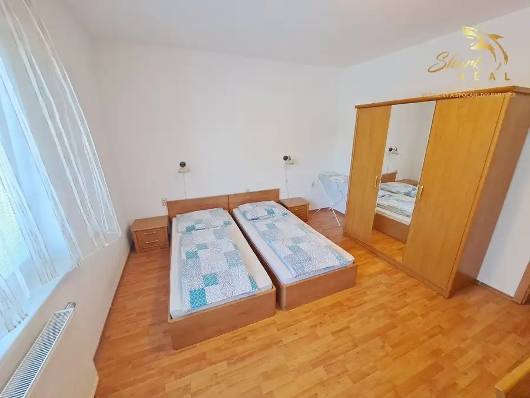
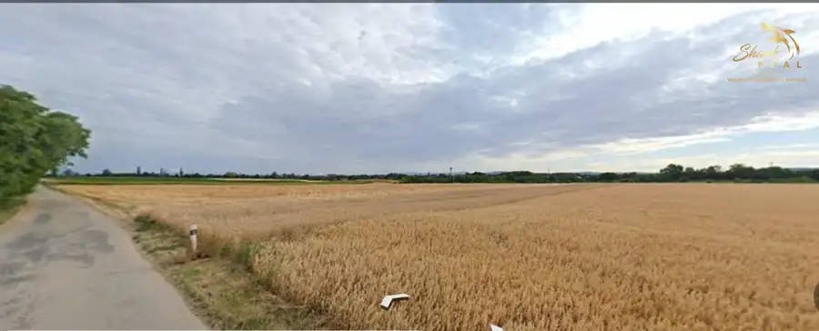

Hala s pozemkami v priemyselnej zóne v Trnave
Trnava
- StavČiastočná rekonštrukcia
- VlastníctvoOsobné
O nehnuteľnosti
Ponúkame Vám na predaj nehnuteľnosť nachádzajúcu sa v Trnave, v areáli bývalej TAZ na Coburgovej ulici.Nehnuteľnosť pozostáva z haly o výmere 500 m2, pozemok o výmere 4769 m2, na pozemku sa nachádzajú ešte dve menšie budovy o výmere cca 60 a 40 m2.Jedná sa o časť pôvodne slúžiacu zlievarni, možné je však komerčné aj priemyselné využitie.Možné odkúpiť aj po častiach, modrá - čistý pozemok, červená - hala s pozemkami. V prípade záujmu poskytneme jednotlivé ceny za jednotlivé časti.Časť 1 na parcele číslo 8598/9 a /10 sú menšie budovy, možné využitie ako zázemie pre výrobu, obchod, opravárenské služby ...Hala v časti 2 na parcele číslo 8598/8 má výmeru cca 500m2 , predtým bola využívaná ako sklad modelov pre Zlievareň Trnava.Možné využitie pozemkov je priemyselná výroba/sklady.Je nutné vybudovať nové prípojky energií. Voda a kanál idú cez pozemky v zelenom páse pri komunikácií na ktorej sú vecné bremená práva prechodu.V prípade kúpy vcelku je cena stanovená na : 658.140€ + DPHMožná dohoda o cene v prípade seriózneho a vážného záujmu.Bližšie informácie vám rád poskytnem na nižšie uvedených kontaktoch:E-mail: kudry@sharkreal.skTel.čislo: 0940 155 746SHARK REAL VÁŠ SILNÝ a SPOĽAHLIVÝ PARTNER V OBLASTI REALÍT
Parametre
| Druh | Priestor pre sklad |
|---|---|
| Dátum zverejnenia | 28. 4. 2025 |
| Stav nehnuteľnosti | Čiastočná rekonštrukcia |
| Typ | Predaj |
| Vlastníctvo | Osobné |
| Úžitková plocha | 0 m² |
Kde to je


Mohlo by Vás zaujímať
 Komerčné priestoryNové10
609 000 €VILLA PARIS v rezidenčnej časti kúpeľného mesta Piešťany
Piešťany
300 m²
Ponúkame na predaj plne obsadený nádherný rodinný penzión (dom) situovaný v rezidenčnej štvrti kúpeľného mesta v Piešťany pri potoku Dubové. VILLA…
Komerčné priestoryNové10
609 000 €VILLA PARIS v rezidenčnej časti kúpeľného mesta Piešťany
Piešťany
300 m²
Ponúkame na predaj plne obsadený nádherný rodinný penzión (dom) situovaný v rezidenčnej štvrti kúpeľného mesta v Piešťany pri potoku Dubové. VILLA…

DomNové10 609 000 €Zrekonštruovaný dom na viacgeneračné bývanie alebo podnikanie Piešťany 300 m² SHARK REAL ponúka na predaj nádherný rodinný dom situovaný na Floreáte v rezidenčnej štvrti kúpeľného mesta Piešťany.Tento dom ma nespočetné množstvo…
PozemokNové4 Cena dohodouPredaj pozemku - záhrada v Bučanoch Bučany 1733 m² !!! ZNÍŽENÁ CENA !!!!Ponúkame Vám na predaj pozemok v katastrálnom území obce Bučany, ktorý je na liste vlastníctva vedený ako záhrada.Pozemok má…